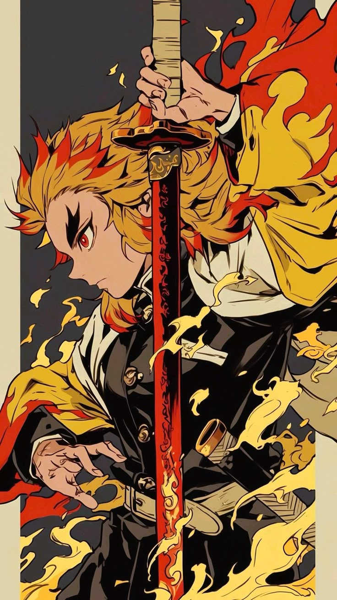

HTML5
Thaner
Thaner

Liked by 4GeeksAcademy, html5, Web and 100.000 others
Las frases más destacadas de Rengoku son aquellas que inspiran a la acción, la perseverancia y la valentía. Entre ellas, se encuentran: "Si lo das todo, te mantendrás firme incluso en la muerte", "Nada es imposible si te lo propones", y "Enciende tu corazón". También se menciona la frase de la madre de Rengoku: "Aquellos que nacen bendecidos con más dones que otros, tienen que usarlos para hacer el bien".